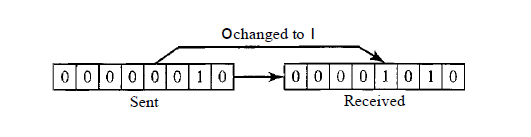
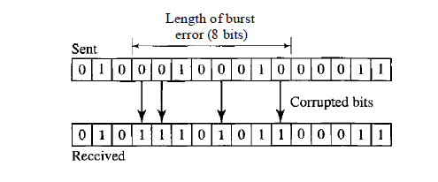

Capítulo 10 - Comunicación de Datos y Redes
Basado en el libro de Behrouz A. Forouzan
La detección y corrección de errores es esencial en las redes de comunicación modernas. Sin estos procesos, los datos transmitidos podrían llegar corruptos al destino, comprometiendo la confiabilidad de la información. Los errores ocurren debido a interferencias, ruido y otros factores en el medio de transmisión.
Existen principalmente dos tipos de errores: de un solo bit y de ráfaga. Estos afectan de forma diferente la transmisión de datos y requieren distintos métodos de corrección. Entender cada tipo permite seleccionar la mejor técnica de corrección.
Este tipo de error ocurre cuando solo un bit en una unidad de datos es alterado durante la transmisión. Es común en medios de transmisión con pocas interferencias. En la imagen a continuación se muestra un ejemplo de un error de un solo bit.
Un error de ráfaga sucede cuando varios bits son alterados de forma continua. Este tipo de error es más complejo de corregir y suele ocurrir en entornos con alta interferencia. La siguiente imagen ilustra un ejemplo de un error de ráfaga.
Existen varios métodos para detectar errores, como la paridad, checksum y los códigos cíclicos (CRC). Cada método tiene sus ventajas y se utiliza según las necesidades de la red. La detección permite identificar errores antes de que afecten los datos.
El método de paridad añade un bit extra a los datos transmitidos para asegurar que el número total de bits sea par o impar. Este método es simple, pero su eficacia es limitada en casos de múltiples errores.